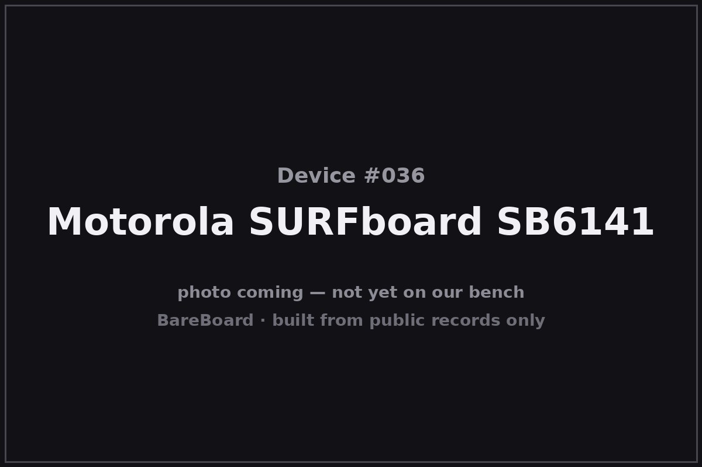

The Autopsy Report · Device #036
The Motorola SURFboard SB6141
The box that does exactly one job — and the rare device in this series with no wireless FCC filing at all, because there's no wireless in it.
What is this thing?
The Motorola SURFboard SB6141 (later sold under the ARRIS name) is a DOCSIS 3.0 cable modem — and only a modem. No Wi-Fi, no router, no phone jacks: one coax in, one gigabit Ethernet out. It bonds 8 downstream and 4 upstream channels for up to 343 Mbps down, and it was the “just buy the modem” answer for a generation of cable customers tired of rental fees. ARRIS product comparison SB6141 user guide
A note on names: Motorola's home-networking business became part of ARRIS, and the 2015 user guide is © ARRIS Enterprises, Inc. — so you'll see both badges on this hardware. Same modem, corporate reshuffle. SB6141 user guide
Not on our bench (yet)
This device is not on our bench. We have never owned, opened, photographed, measured, or powered on the SB6141. Everything in this report comes from public records: government filings, manufacturer documents, manuals, and credible public teardowns and hardware databases. Where a fact would require holding the hardware in our hands — our own photos, our measurements, our boot logs, the exact board revision of a future unit — we say so, out loud, and mark it unknown. Nothing here is presented as first-hand BareBoard evidence.
That constraint is also the point: you can learn a remarkable amount about a device without ever touching it, because the public record is deep. What follows is everything the record could tell us — and an honest map of where the record runs out.
A short history
- 2007Texas Instruments introduces the Puma 5 DOCSIS 3.0 chipset at the Cable Show; Motorola — one of TI's largest cable-modem customers — submits a TI-based modem for CableLabs certification Wave 56. LightReading
- c. 2012–2013The SB6141 ships as Motorola's 8×4 DOCSIS 3.0 modem — the step up from the 4×4 SB6121, the stable alternative to the later Puma 6 generation that would become infamous for latency defects. SNBForums
- 2015The user guide is now © ARRIS Enterprises, Inc. — the Motorola home business has changed hands, and the SURFboard line wears the ARRIS badge. SB6141 user guide
- 2016–2018Intel's Puma 6 latency defect goes public and earns Arris a class-action lawsuit — while the older TI-based SB6141 keeps its reputation as the boring, reliable one. Different chip, different story. SNBForums
The outside
A white upright tower — the classic SURFboard silhouette. The front carries a column of LEDs: power, downstream, upstream, online, and link. The rear is minimalism itself: coax connector, one gigabit Ethernet jack, power inlet, and a recessed reset button. No antennas, because there's no Wi-Fi. SB6141 user guide

The manual even includes a wall-mounting template — this is a device designed to be screwed to a wall and forgotten, which is exactly what most owners did.
The board
No verified internal-photo filing exists for the SB6141 — and there's a reason, covered in the FCC section below. What the public hardware record does give us: a Texas Instruments CPU, 8 MiB of flash, and 32 MiB of RAM, per the public hardware database. TechInfoDepot
Community consensus identifies the platform as TI's Puma 5 — the pre-Intel, ARM-based DOCSIS 3.0 chipset TI announced in 2007 — distinct from the later Intel Puma 6 that developed the latency-defect reputation. LightReading SNBForums The exact part marking on the SoC is unverified: no public internal photos, no confirmed die shots. That stays unknown.
Under the microscope: the chips
What the public record says is inside the SB6141. There is no wireless FCC exhibit to confirm against — so everything here is corroborated public record, honestly badged.
| Chip | What it does | How we know | Dig deeper |
|---|---|---|---|
| Texas Instruments Puma 5 family | The DOCSIS 3.0 SoC — ARM-based, pre-Intel TI silicon; the modem's entire computer. | Likely TI announced Puma 5 as its DOCSIS 3.0 chipset with Motorola as a lead customer; public hardware databases and community consensus place the SB6141 on it. Exact part marking unverified. | LightReading |
| Flash: 8 MiB | Firmware storage. | Likely Public hardware database entry for the SB6141. | TechInfoDepot |
| RAM: 32 MiB | Working memory. | Likely Public hardware database entry for the SB6141. | TechInfoDepot |
No verified internal photos exist in the public record, so no exact chip markings are confirmed. The tuner, Ethernet PHY, and power circuitry are unidentified. If a unit ever reaches our bench, this table gets rewritten from silicon.
The government's file on this box
Here is the SB6141's party trick for this series: it has no wireless equipment-authorization FCC filing — because it has no wireless. The SB6141 is a pure modem, so instead of the wireless certification dossier every other device in this batch carries, it was sold under the FCC's Part 15 Class B Declaration of Conformity path for unintentional radiators. The manual says it outright: the modem is “a Class B digital device” that must accept any interference it receives. SB6141 manual (FCC statement)
- What that means: no public internal photos, no test-report power figures, no antenna exhibits — the whole “government's file” section that enriches every other report in this batch simply doesn't exist for this device.
- What does exist: the user guide and ARRIS's product documentation, which give us the specs, the LED behaviors, and the reset procedure.
This is the one device in the Hot 100 networking batch where the public record is thinnest by regulation — not by secrecy, just by the rules working as designed for a non-transmitting device.
Service, recovery, and debug modes
We listen, we don't knock: this section documents only that service or recovery modes exist in the public record, and what kind of thing they are — never how to defeat a lock.
The user guide documents a reset button on the rear panel for restoring factory defaults — a standard, manufacturer-documented recovery path. SB6141 user guide That's the existence claim; the manual describes its purpose, and we go no further.
We found no public record of a serial console, bootloader recovery mode, or other debug interface for the SB6141. Given the thin regulatory record, that absence is unsurprising — and it stays unknown until a bench says otherwise.
What the public record shows
Doing one job is a feature. The SB6141's public record is a reminder that the modem and the router are separable jobs — and that separating them means your Wi-Fi upgrades never force a modem swap, and your modem never broadcasts anything. In an era of all-in-one gateways with hidden networks, there's an elegance to a box with no radio at all.
The Puma name needs disambiguation. “Puma” became a dirty word because of the Intel Puma 6 latency defect — but the SB6141's Puma 5 is earlier, TI-designed, ARM-based silicon with a solid reputation in the public record. SNBForums Same brand, different chip, different story; the record punishes conflation.
Regulation shapes the record. This is the thinnest-sourced report in the batch, and the reason is structural: non-transmitting devices don't generate wireless FCC dossiers. When the government's file doesn't exist, the honest report says what's missing and why.
What we didn't do
- We never had a unit, so we took no photographs and no measurements.
- We never opened an enclosure or lifted an RF shield.
- We never captured a boot log or probed a debug port.
- We never extracted, modified, redistributed, or ran the device's firmware.
- We never defeated a lock, bypassed authentication, or recovered credentials or keys — and we publish none.
- We never tested an exploit or a vulnerability against any device.
- Anything below marked Unknown stays unknown until a unit reaches our bench.
By the numbers
- Device: Motorola SURFboard SB6141 (later ARRIS SURFboard SB6141)
- Job: DOCSIS 3.0 cable modem — no Wi-Fi, no router
- Channels: 8 downstream × 4 upstream; up to 343 Mbps down
- Ports: 1× gigabit Ethernet; coax in
- Power: ~9 W nominal; 12 VDC input
- Memory (public record): 8 MiB flash; 32 MiB RAM
- Likely SoC: Texas Instruments Puma 5 family (exact marking unverified)
- Wireless FCC filing: None — Part 15 Class B Declaration of Conformity instead
Words to know
Every term this page uses, in plain English. No prior knowledge required.
- DOCSIS
- The standard cable modems use to talk to the cable company. 3.0 is the generation in this box.
- Channel bonding
- Using several downstream/upstream channels at once for more speed — 8×4 means eight down, four up.
- CMTS
- Cable modem termination system — the ISP's head-end equipment your modem talks to.
- Puma (chip family)
- Texas Instruments' — later Intel's — line of cable-modem SoCs. Puma 5 (TI, ARM) and Puma 6 (Intel, Atom) are very different chips sharing a brand.
- Declaration of Conformity
- The FCC path for devices that don't intentionally transmit radio: the maker declares compliance with Part 15 limits instead of certifying a transmitter.
- Modem vs. gateway
- A modem just bridges your home to the ISP; a gateway adds a router and Wi-Fi. The SB6141 is only the first.
- FCC
- The Federal Communications Commission — the U.S. agency that regulates anything that transmits radio.
Sources & confidence
- Specs (8×4, up to 343 Mbps, gigabit Ethernet, ~9 W, 12 VDC), LED and rear-panel layout, reset procedure, ARRIS 2015 copyright: the SB6141 user guide and ARRIS product literature via manuals.plus. High confidence.
- Part 15 Class B Declaration-of-Conformity treatment and the 'Class B digital device' statement: the modem's own manual. High confidence.
- Puma 5 as TI's DOCSIS 3.0 chipset with Motorola as a lead customer: LightReading's 2007 reporting. High confidence in the attribution.
- SB6141 as TI/Puma 5-based with a solid reputation (vs. Intel Puma 6): SNBForums community discussion and the TechInfoDepot hardware database (TI CPU, 8 MiB flash, 32 MiB RAM). Medium confidence; exact SoC marking explicitly unverified.
- No verified internal-photo filing or exact chip list was located; stated as a gap, not a claim.
Anything not listed here is unknown until the bench says otherwise. We'll say so, out loud, when that's the case.
Legal note. BareBoard is an educational project. This page is built entirely from public records — government filings, manufacturer documents, and published third-party research — about hardware we have never possessed. We don't publish, host, or distribute firmware, keys, passwords, or credentials, and nothing here is instructions for defeating a lock or an authentication check. Product names and trademarks belong to their respective owners and appear here only to identify the hardware. If you believe anything here infringes your rights, contact us and we'll address it promptly.